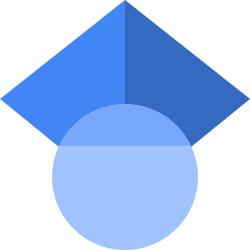

Feel free to write an email to prince.gollapalli@gmail.com if you need the PDF of the paper(s).
Check my google scholar page for the updated list of publications.
Google scholar 
* Corresponding author
- 11. Effect of nanoparticle size and active site position on the thermodynamics and charge dynamics of NiOOH catalyst for oxygen evolution reaction
Prince Gollapalli, Santu Biswas, Leeor Meir, Nofar Refaeli and Maytal Caspary Toroker*
Discover Electrochemistry | vol. 3, pp. 1-19, 2026 | DOI
- 10. Factors Determining Hydrogenation and Hydration Reactions in Mn-Doped Perovskite-Type Zirconates
Masatsugu Oishi*, Prince Gollapalli, Takuya Doi, Takashi Nakamura, Toshiaki Ina, Maytal Caspary Toroker, Koji Amezawa, and Yuji Okuyama
ACS Applied Energy Materials | vol. 9, pp. 6106−6120, 2026 | DOI
- 9. Understanding surface charging limitations of hematite photoanodes through combining cathodic discharge measurements and computational modeling
Natav Yatom, Prince Gollapalli, Daniel A Grave, Avner Rothschild, Maytal Caspary Toroker*
Journal of Catalysis | vol. 456, pp. 116751, 2026 | DOI
- 8. On the microstructural, mechanical, damping, wear properties of magnesium alloy AZ91-3 vol. % SiCp-3 vol. % fly ash hybrid composite and property correlation thereof
Prince Gollapalli*, Mridul Pant, A.R. Anil Chandra, M.K. Surappa
Journal of Magnesium and Alloys | vol. 13, pp. 2374–2389, 2025 | DOI
- 7. Theoretical understanding of water splitting by analyzing nanocatalyst photoabsorption spectra
Prince Gollapalli and Maytal Caspary Toroker*
Nanophotonics | vol. 14, no. 2, pp. 153-167, 2025 | DOI
- 6. Accelerating defect predictions in semiconductors using graph neural networks
Md Habibur Rahman, Prince Gollapalli, Panayotis Manganaris, Satyesh Kumar Yadav, Ghanshyam Pilania, Brian DeCost, Kamal Choudhary, Arun Mannodi-Kanakkithodi*
APL Machine Learning | vol. 2, no.1, p. 016122, 2024 | DOI
- 5. Role of electronic binding energy on the stability of B, C, N, and O in Fe
P.S.V.R.A. Kishor, Prince Gollapalli, Debolina Misra, Prajeet Oza, Satyesh Kumar Yadav*
Physica B: Condensed Matter | vol. 668, p. 415264, 2023 | DOI
- 4. Predicting formation of chemically graded metal/ceramic interfaces
Prince Gollapalli, PSVRA Kishor, and Satyesh Kumar Yadav*
Computational Materials Science | vol. 224, p. 112155, 2023 | DOI
- 3. Atomically chemically graded Ti/TiN interface
Prince Gollapalli, J Varalakshmi, PSVRA Kishor, Prajeet Oza, and Satyesh Kumar Yadav*
Applied Surface Science | vol. 597, p. 153637, 2022 | DOI
- 2. Annealing-induced changes in optoelectronic properties of sputtered copper oxide films
Aarju Mathew Koshy, A. Sudha, Prince Gollapalli, Satyesh Kumar Yadav, and Parasuraman Swaminathan*
Journal of Materials Science: Materials in Electronics | vol. 33, p. 13539, 2022 | DOI
- 1. A Computational study on boron dipyromethene ancillary acceptor-based dyes for dye-sensitized solar cells
Ganapathi Rao Kandregula, Sudip Mandal, Gollapalli Prince, Satyesh Kumar Yadav, and Kothandaraman Ramanujam*
New Journal of Chemistry | vol. 44, no. 12, p. 4877, 2020 | DOI